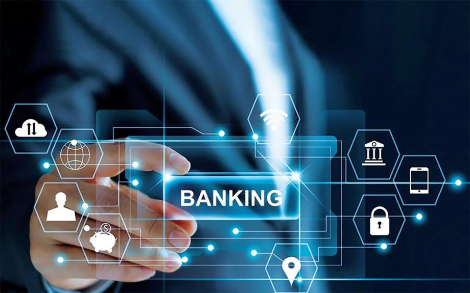

Cryptocurrency

The introduction of blockchain increases the speed of exchange, reduces time costs, improves the quality, reliability and availability of services. At the same time, transparency and reliability are increased, risks are reduced. The main scope of blockchain application is the crypto industry. But in addition, blockchain projects are used in the banking sector, financial services, payment services, the public sector (public services, real estate registers, notary, electronic voting, etc.), transport and logistics, IoT, healthcare, intellectual property management, energy, etc. In the crypto industry, blockchain has become the technological basis for issuing cryptocurrencies, which are a modern version of Hayek's "private money". At the same time, the largest of them, such as bitcoin and ether, have a global circulation. Tokenization takes place on the basis of this technology. Token issuance is a special form of asset securitization based on mass and global investor demand. The cost reduction is much more significant in comparison with the procedures of traditional financial markets.
Banking
Blockchain allows you to make all processes in the banking industry safer, more reliable and more transparent. Money transfers, settlements in securities transactions, letters of credit, KYC compliance, routine work of banks' back offices - all these operations now take place with the introduction of this technology. Blockchain can reduce banks' costs by up to 50%. This was stated back in 2017 by Morgan Stanley analysts. In their opinion, the blockchain could optimize the infrastructure, radically reduce costs and provide the necessary increase in the RoE (return on equity) of banks. Many banks, despite their inherent conservatism, would be dangerous to underestimate the potential of this technology. Its widespread implementation may lead to the liquidation of some participants in the global financial system.
Cybersecurity
Copies of the entire database are stored on each node of the blockchain system, and they are checked against each other. This makes the system viable even in case of successful hacker attacks on its single nodes. Despite the fact that applications on the blockchain offer anonymity, the technology can be used to attach real identification data to cryptographic data in the database. A startup is known to have created a convenient way to securely enter data, track them and transfer property rights through a blockchain platform. This helps real estate firms: records management becomes more convenient, search time is reduced, confidentiality and transparency are growing. Another case is the reputation system of Internet users, which accrues monetary remuneration in the ether cryptocurrency based on reputation indicators.
Identification card

Such IDs represent the transfer of personal data about a person to the blockchain, the creation of his digital profile. There is a large list of public services that can be accessed via blockchain, and there are statistics of advanced blockchain countries (Estonia, some emirates of the UAE). The use of blockchain and blockchain-ID by an active citizen can become a common pattern of behavior already during the lifetime of the modern generation. Both in Russia and in the West, states have been actively looking for ways to optimize their administrative activities in recent decades. A good solution for this would be to transfer all routine and archaic processes to the blockchain. At the same time, no one removed the issues of privacy and information security protection from the agenda — on the contrary, in the era of blockchain, it will become a priority.